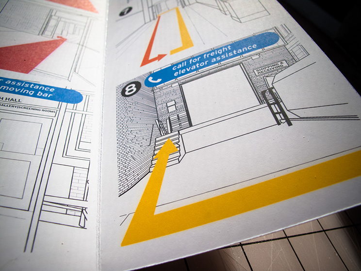
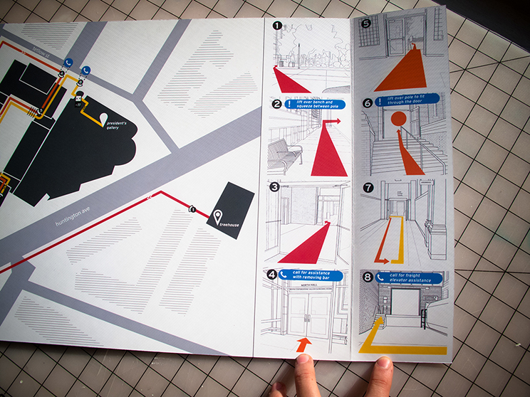
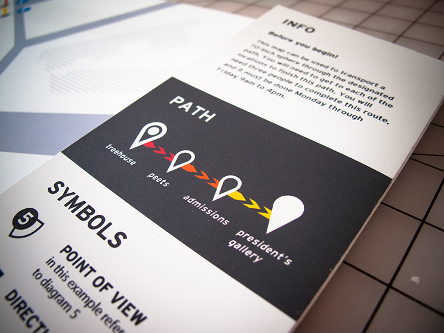
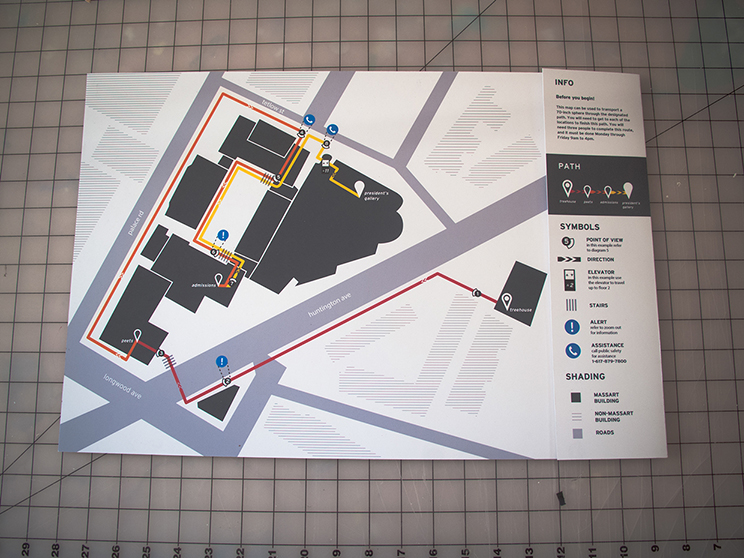

Wayfinding Map
This assignment involved pathfinding to create a map that visually explains how to transport large cargo (up to 70 inches wide) between specific locations with several waypoints in the Massachusetts College of Art and Design campus. This was a team project consisting of Mikayla Gregory, and Jonny Prandato, and myself. We did research to analyze the campus and create a map that contained elements of wayfinding, user experience, and information design all in a hierarchical sense to represent time, distance, scale, and action in the most understandable way.
A project for Information Architecture I at MassArt.